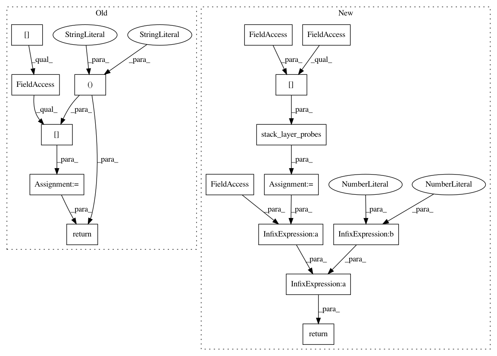

9b254aaf76efaa0a3789a67137c9817684862cf9,snntoolbox/simulation/target_simulators/loihi_target_sim.py,SNN,get_spiketrains_output,#SNN#,277
Before Change
def get_spiketrains_output(self):
shape = [self.batch_size, self.num_classes, self._num_timesteps]
idx = self.probe_idx_map["spikes"]
spiketrains_flat = self.probes[-1][idx].data[:, -self._num_timesteps:]
spiketrains_b_l_t = self.reshape_flattened_spiketrains(
spiketrains_flat, shape, False)
return spiketrains_b_l_t
def get_vmem(self, **kwargs):
i = kwargs[str("monitor_index")]
if "v_mem" in self.probe_idx_map.keys():
After Change
return
layer = self.snn.layers[-1]
probes = self.stack_layer_probes(self.spike_probes[layer.name])
shape = [self.batch_size, self.num_classes, self._num_timesteps]
spiketrains_b_l_t = self.reshape_flattened_spiketrains(probes, shape)
return spiketrains_b_l_t / layer.vTh / 2 ** 6
def get_vmem(self, **kwargs):
if self.voltage_probes is None:
return
In pattern: SUPERPATTERN
Frequency: 3
Non-data size: 16
Instances
Project Name: NeuromorphicProcessorProject/snn_toolbox
Commit Name: 9b254aaf76efaa0a3789a67137c9817684862cf9
Time: 2019-07-11
Author: bodo.rueckauer@intel.com
File Name: snntoolbox/simulation/target_simulators/loihi_target_sim.py
Class Name: SNN
Method Name: get_spiketrains_output
Project Name: NeuromorphicProcessorProject/snn_toolbox
Commit Name: 9b254aaf76efaa0a3789a67137c9817684862cf9
Time: 2019-07-11
Author: bodo.rueckauer@intel.com
File Name: snntoolbox/simulation/target_simulators/loihi_target_sim.py
Class Name: SNN
Method Name: get_spiketrains
Project Name: NeuromorphicProcessorProject/snn_toolbox
Commit Name: 9b254aaf76efaa0a3789a67137c9817684862cf9
Time: 2019-07-11
Author: bodo.rueckauer@intel.com
File Name: snntoolbox/simulation/target_simulators/loihi_target_sim.py
Class Name: SNN
Method Name: get_spiketrains_input